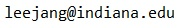

Ph.D. candidate
School of Informatics, Computing, and Engineering
Indiana University
Room 323, 919 East 10th Street
Bloomington, Indiana, 47408, USA

Hello, I am a Ph.D Candidate in the Intelligent and Interactive Systems track of Informatics in the School of Informatics, Computing, and Engineering at Indiana University. I have expertise in computer vision and its application for robotics, and have extensive research experience using deep learning frameworks (Tensorflow and Caffe) and the Robot Operating System (ROS), among many other technologies. I am advised by Prof. David Crandall and Prof. Selma Šabanović and in the final stage of Ph.D studies and plan to graduate in Spring or Summer 2018.
Computer Vision, Computer Vision for Robotics, Human-Robot Interaction, Human-Robot Collaboration
Peer-reviewed conference papers:
@inproceedings{leejang_iros2017, title = {Learning Robot Activities from First-Person Human Videos Using Convolutional Future Regression}, author = {Jangwon Lee and Michael S. Ryoo} booktitle = {IEEE/RSJ International Conference on Intelligent Robots and Systems (IROS)}, year = {2017} }
@inproceedings{firstthird2017cvpr, title = {Identifying first-person camera wearers in third-person videos}, author = {Chenyou Fan and Jangwon Lee and Mingze Xu and Krishna Kumar Singh and Yong Jae Lee and David J. Crandall and Michael S. Ryoo}, booktitle = {IEEE Conference on Computer Vision and Pattern Recognition (CVPR)}, year = {2017} }
@inproceedings{lee2017real, title={Real-Time, Cloud-Based Object Detection for Unmanned Aerial Vehicles}, author={Lee, Jangwon and Wang, Jingya and Crandall, David and {\v{S}}abanovi{\'c}, Selma and Fox, Geoffrey}, booktitle={IEEE International Conference on Robotic Computing (IRC)}, year={2017} }
Extended abstracts in conferences and workshops:
@InProceedings{Lee_2017_CVPR_Workshops, author = {Jangwon Lee and Michael S. Ryoo}, title = {Learning Robot Activities From First-Person Human Videos Using Convolutional Future Regression}, booktitle = {The IEEE Conference on Computer Vision and Pattern Recognition (CVPR) Workshops}, year = {2017} }